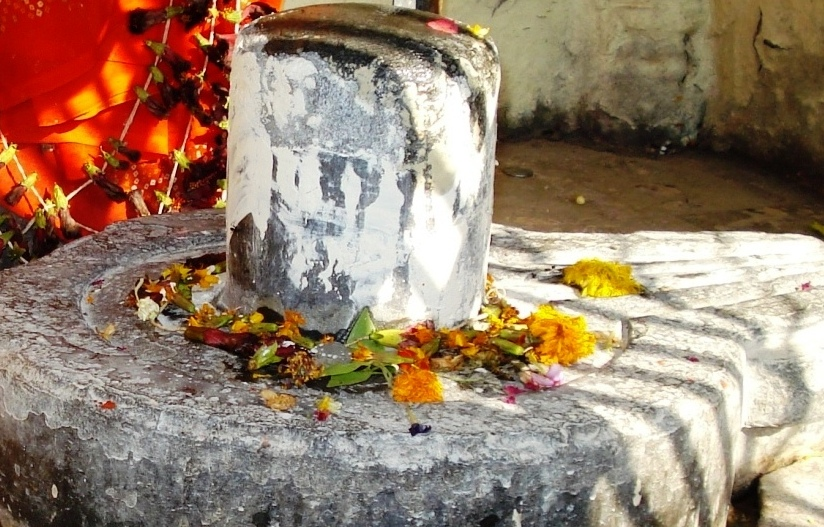

<?xml version="1.0" encoding="UTF-8"?><rss version="2.0"
	xmlns:content="http://purl.org/rss/1.0/modules/content/"
	xmlns:wfw="http://wellformedweb.org/CommentAPI/"
	xmlns:dc="http://purl.org/dc/elements/1.1/"
	xmlns:atom="http://www.w3.org/2005/Atom"
	xmlns:sy="http://purl.org/rss/1.0/modules/syndication/"
	xmlns:slash="http://purl.org/rss/1.0/modules/slash/"
	>

<channel>
	<title>Dwareshwar &#8211; Varanasi Temples</title>
	<atom:link href="index.html" rel="self" type="application/rss+xml" />
	<link>../../../../../index.html</link>
	<description>Temples of Varanasi as referred to in Kashi Khand</description>
	<lastBuildDate>Thu, 19 Jun 2025 05:16:46 +0000</lastBuildDate>
	<language>en-US</language>
	<sy:updatePeriod>hourly</sy:updatePeriod>
	<sy:updateFrequency>1</sy:updateFrequency>
	<generator>https://wordpress.org/?v=4.6.29</generator>
	<item>
		<title>DWARESHWAR</title>
		<link>../../../../../shiva-temples/dwareshwar/index.html</link>
		<pubDate>Sun, 09 May 2010 03:18:53 +0000</pubDate>
		<dc:creator><![CDATA[admin]]></dc:creator>
				<category><![CDATA[Dwareshwar]]></category>
		<category><![CDATA[Other Shiva Temples (A-D)]]></category>
		<category><![CDATA[Shiva Temples]]></category>

		<guid isPermaLink="false">../../../../../p=223.html</guid>
		<description><![CDATA[Goddess Parvaty wanted to know about  various Shiv Lings and deities at several places in Kashi and Lord Shiva was pleased to describe such deities (Kashi Khand, Chapter 97). Lord Shiva narrates about Dwareshwar Ling along with Dwareshwari Devi. (DWARESHWAR) Devotees who worship Dwareshwar will attain  full benefits of living in Kashi and attain Siddhi.  [&#8230;]]]></description>
				<content:encoded><![CDATA[<p>Goddess Parvaty wanted to know about  various Shiv Lings and deities at several places in Kashi and Lord Shiva was pleased to describe such deities (Kashi Khand, Chapter 97).</p>
<p>Lord Shiva narrates about Dwareshwar Ling along with Dwareshwari Devi.</p>
<p></p>
<p style="text-align: center;"><strong>(DWARESHWAR)</strong></p>
<p>Devotees who worship Dwareshwar will attain  full benefits of living in Kashi and attain Siddhi.  In other words, they will acquire divine powers and attain Moksha.<strong> </strong></p>
<p><strong><span style="text-decoration: underline;">LOCATION OF DWARESHWAR</span></strong></p>
<p>Dwareshwar is mentioned to be in south of Durg Vinayak at B-27/1.  Our enquiries revealed that the deity is located outside the South entrance of Durga Devi Temple at Durga Kund.  The main entrance is to the western side.  Dwareshwar is located in  a small temple like structure alongwith Dwareshwari Devi (mentioned in Kashi Khand, Chapter 97).</p>
<p><strong><span style="text-decoration: underline;">TYPES OF POOJA</span></strong></p>
<p>The place of worship is open practically throughout and devotees can perform pooja on their own.</p>
]]></content:encoded>
			</item>
	</channel>
</rss>
